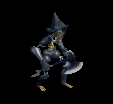
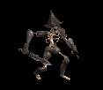

モンスター画像 色比較
色違いが5種類そろっているモンスター画像を、旧版（2022）と現行で並べて確認できます。
名称で検索し、正面・背面・待機アニメーションを切り替えて比較できます。画像をクリックすると回転します。
各列は同じ外見の色違いです。同じ画像を使う名称が複数ある場合はまとめて表示しています。
色違いが5種類そろっているモンスター画像を、旧版（2022）と現行で並べて確認できます。
名称で検索し、正面・背面・待機アニメーションを切り替えて比較できます。画像をクリックすると回転します。
各列は同じ外見の色違いです。同じ画像を使う名称が複数ある場合はまとめて表示しています。

モンスター・NPC画像 新旧比較
モンスター情報